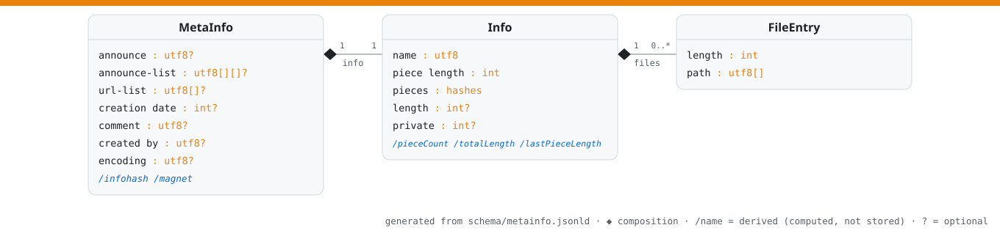

Loading schema…
A machine-readable model of BitTorrent in JSON-LD, in the manner of Bitcoin Schema: structures, their bencode keys and value types, derivations, and validity rules. One schema; many projections: a codec with no per-field code, this page, the diagram, the tests.
The metainfo structures as a UML class diagram — generated from the schema, so it never drifts. Filled diamonds are composition; /name entries are derived (computed, not stored); ? marks optional fields.

Loading schema…